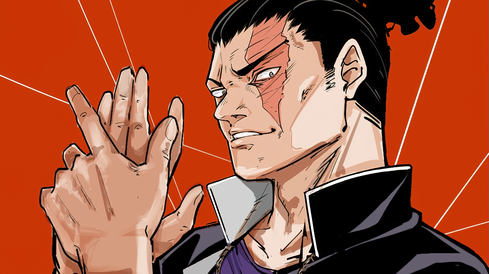
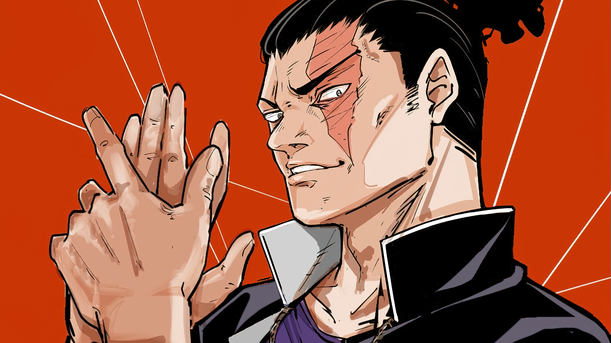
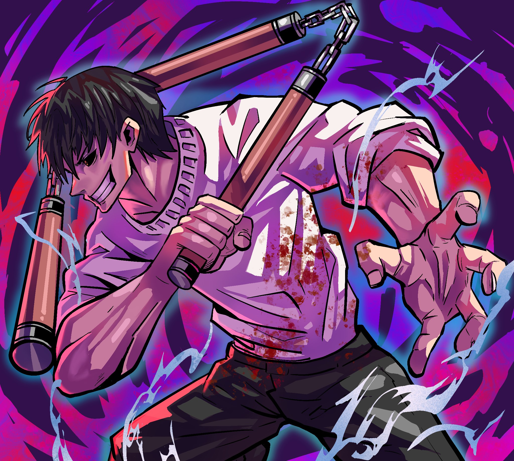

Por quê Jujutsu Kaisen é o melhor anime?
MOTIVOS QUE O TORNAM MELHOR QUE A MAIORIA DOS ANIMES SHONEN
Jujutsu Kaisen

Jujutsu Kaisen, uma expressão japonesa que se traduz literalmente como "Luta de Feitiçaria" em português, conquistou um espaço único no coração dos fãs de anime, especialmente aqueles apaixonados pelo gênero Shonen.
Complexidade psicológica e temas profundos

Jujutsu Kaisen vai além das batalhas épicas e explora temas complexos como moralidade, existencialismo e as consequências das escolhas dos personagens. Essa profundidade intelectual adiciona camadas à narrativa, envolvendo os espectadores e os incentivando a refletir sobre a complexidade do mundo apresentado.
Animação flúida e brilho visual

Graças ao estúdio MAPPA, Jujutsu Kaisen se beneficia de uma animação de alta qualidade, comparável apenas a grandes nomes como Demon Slayer e a série Fate. As cenas de batalha são um espetáculo visual, com detalhes e fluidez que muitas vezes superam o próprio mangá.
Conheça o mundo Jujutsu

 

Os personagens são bem trabalhados, o sistema de energia amaldiçoada em Jujutsu Kaisen é único e complexo, com diversas variações e limitações. Venha se aventurar nessa obra.
Fatos interessantes
Como você pode notar, o plot de Jujutsu Kaisen é super interessante e explora, no seu âmago, a natureza humana. Ou, melhor dizendo, o lado ruim da natureza humana, já que as maldições surgem de sentimentos negativos de pessoas.
Isso por si só já constitui uma crítica bem pertinente sobre como uma pessoa sempre pessimista, que está sempre pensando no pior e emanando coisas ruins, pode virar refém de si mesma.
Nesse sentido, ela se torna sua própria maldição e ainda pode “contagiar” os outros ao redor dela, levando adiante essa negatividade toda que, claro, só faz mal. Assista já